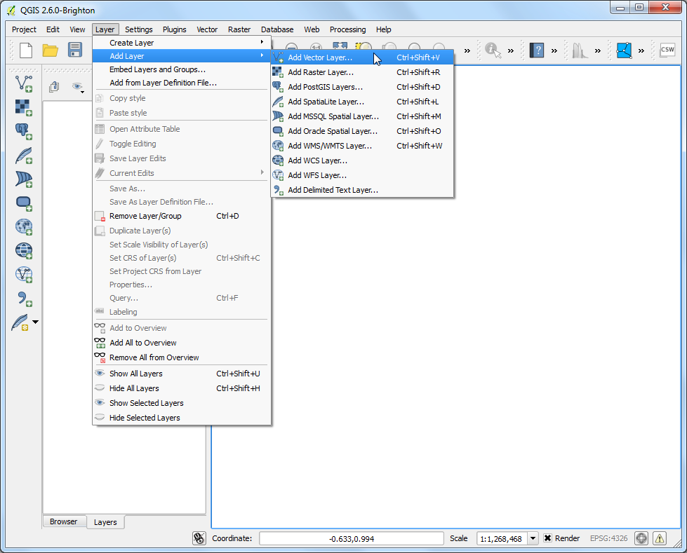
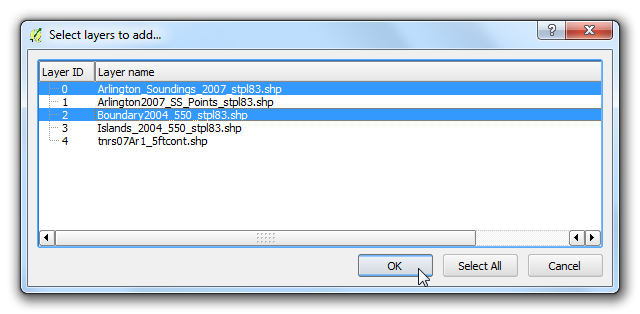
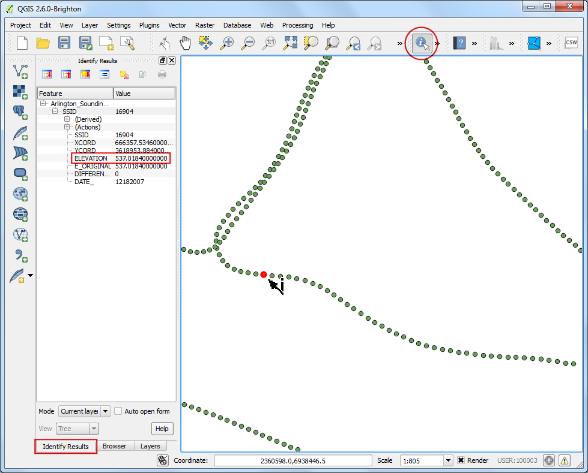
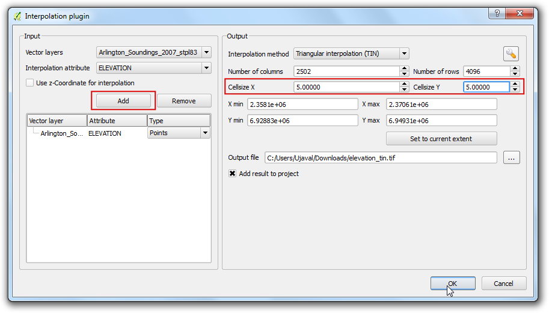
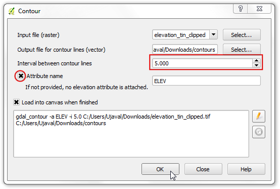
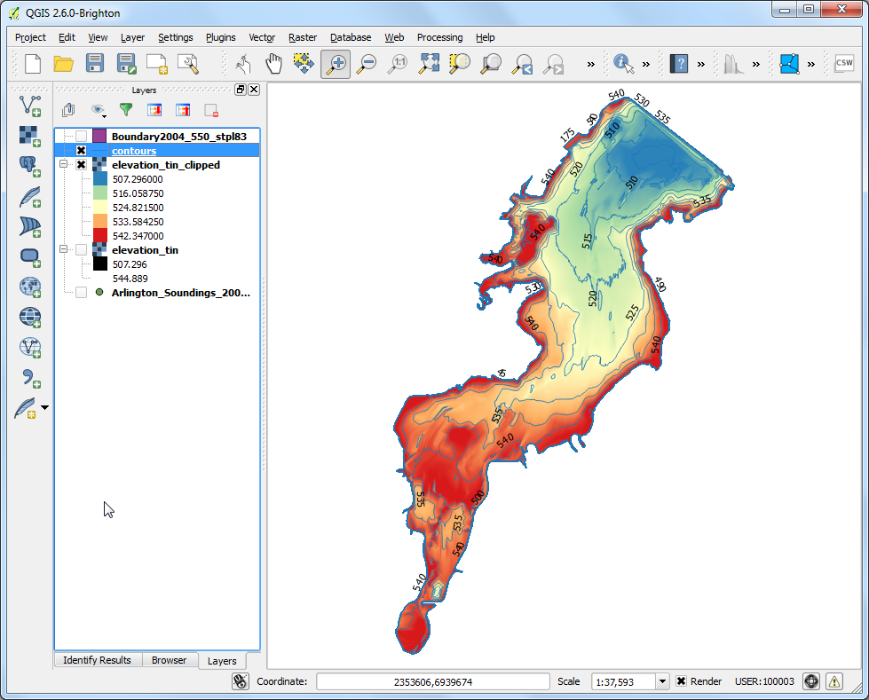

Interpolasi Data Poin
[ Download PDF
A4
Letter ]
Interpolasi secara umum dipakai di GIS sebagai teknik unttuk membuat permukaan yang kontinu dari poin diskrit. Banyak fenomena di dunia nyata yang berupa kontinu - elevasi, tanah, temperatur dan lain-lain. Tapi kita ingin untuk memodelkan permukaan ini untuk analisis, suatu hal yang mustahil untuk melakukan pengukuran melalui permukaan. Karenanya, pengukuran lapangan diambil pada berbagai poin sepanjang permukaan dan nilai sekunder adalah yang disimpulkan dengan suatu proses bernama ‘interpolation’. Dalam QGIS, interpolasi dapat dilakukan melalui fungsi built-in yakni Interpolation plugin.
Tinjauan Tugas
Kita akan mengukur kedalaman medan untuk Danau Arlington di Texas dan membuat sebuah peta relief elevasi dan kontur dari pengukuran ini.
Skill lain yang akan anda pelajari
Membuat kontur dari data poin
Masking nilai tanpa-data dari sebuah layer raster
Menambah label ke layer vektor.
Prosedur
Buka QGIS. Akses

Jelajahi file Shapefiles.zip yang sudah diunduh dan pilih. KLik Open.

Pada dialog Select layers to add... , tahan tombol Shift`dan pilih layer ``Arlington_Soundings_2007_stpl83.shp` dan Boundary2004_550_stpl83.shp . Klik OK.

Anda akan melihat 2 layer telah dibuka di QGIS. layer Boundary2004_550_stpl83 merepresentasikan batas danau. Batalkan tanda cek pada kotak di sebelahnya pada di Table of Content.

Ini akan memngungkap data dari layer kedua Arlington_Soundings_2007_stpl83 . Walaupun data terlihat seperti garis, ono adalah kumpulan poin yang berjarak sangat dekat.

Klik ikon Zoom dan pilih sebuah area kecil di layar. Semakin anda menzoom, anda akan melihat poin-poin. Tiap poin merepresentasikan hasil bacaan yang diambil Depth Sounder pada lokasi yang direkam dengan peralatan DGPS.

Pilih tool Identify dan klik sebuah poin. Anda akan melihat panel Identify Results muncul di sebelah kiri dengan nilai attribut poin tersebut. Dalam kasus ini, attribut ELEVATION mengandung informasi kedalaman danau di lokasi. Karena tugas kita untuk membuat profil kedalaman dan kontur elevasi, kita akan menggunakan nilai-nilai ini sebagai input untuk interpolasi.

Pastikan anda sudah mengaktifkan Interpolation plugin . Lihat docs/using_plugins untuk mengetahui bagaimana caranya mengaktifkan plugins. Kalau plugins sudah aktif, akses Raster –> Interpolation –> Interpolation`.

Pada dialog Interpolation , pilih Arlington_Soundings_2007_stpl83``l sebagai :guilabel:`Vector layers` di panel :guilabel:`Input` . Pilih ``ELEVATION sebagai Interpolation attribute . Klik Add . Ubah nilai Cellsize X dan Cellsize Y menjadi ``5` . Nilai ini adalah ukuran tiap pixel di grid output. Karena sumber data kita dalam CRS terproyeksi atau projected dengan Feet-US sebagai unit, berdasarkan seleksi, ukuran grid menjadi 5 feet . Klik tombol ... disebelah Output file dan namakan file output dengan elevation_tin.tif . Klik OK.
Catatan
Hasil interpolasi dapat beragam secara signfikan bergantung pada metode dan parameter yang anda gunakan. Interpolasi QGIS mensupport metode Triagulated Irregular Network (TIN) dan Inverse Distance Weighting (IDW) untuk interpolasi. Metode TIN umumnya digunakan untuk data elevasi sedangkan metode IDW untuk interpolasi data tipe lain seperti konsenstrasi mineral, populasi dan sebagainya/ Lihat Spatial Analysis module of the QGIS documentation for more details.

Anda akan melihat layer baru elevation_tin terbuka di QGIS. Klik kanan layer dan pilih Zoom to layer.

Sekarang anda akan melihat Jangkauan secara seluruhnya dari permukaan yang dihasilkan . Interpolasi tidak memberikan hasil yang akurat di luar area koleksi. Mari klip hasil permukaan dengan batas danau. Akses .

Beri nama Output file dengan elevation_tin_clipped.tif . Pilih Cliiped mode dengan Mask layer . Pilih Boundary2004_550_stpl83 sebagai Mask layer` . Klik OK.

Sebuah raster baru elevation_tin_clipped akan dibuka di QGIS. Sekarang kita akan menstyle layer ini untuk menunjukkan perbedaan dalam elevasi. Perhatikan bahwa nilai min dan maks elevasi dari layer elevation_tin . KLik kanan layer elevation_tin_clipped dan pilih Properties.

Akses tab Style . Pilih xxx Render type`dengan ``Singleband pseudocolor` . Pada panel Generate new color map , pilih color ramp Spectral . Karena kita ingin membuat peta-kedalaman yang kontradiksi dengan peta-ketinggian, beri tanda cek pada kotak Invert . Ini akan memasangkan warna biru untuk area dalam dan merah untuk daerah dangkal. Klik Classify.

Pindah ke tab Tranparency . Kita ingin mengapus pixel-hitam dari output kita. Masukkan 0 sebagai Additional no data value . Klik OK.

Sekarang anda memiliki sebuah peta relief elevasi untuk danau yang dihasilkan dari pembacaan data kedalaman individu. mari sekarang kita buat kontur. Akses .

Pada dialog Contour , masukkan contours sebagai Output file for contour lines . Kita akan membuat garis kontur dengan interval 5 kaki atau 5ft, jadi masukkan 5.00 sebagai Interval between contour lines . Beri tanda cek pada kotak Attribute name . Klik OK.

Garis kontur akan terbuka sebagai layer contours saat proses selesai . Klik kanan pada layer dan pilih Properties.

Akses tab Labels . Beri tanda cek pada kotak Label this layer with dan pilih ELEV sebagai field. Pilih Curved sebagai tipe Placement dan klik OK.

Anda akan melihat bahwa setiap garis kontur akan secara layak dilabli dengan elevasi sesuai garis.
